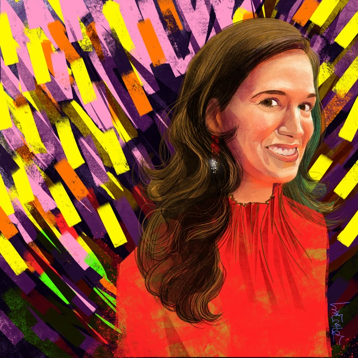
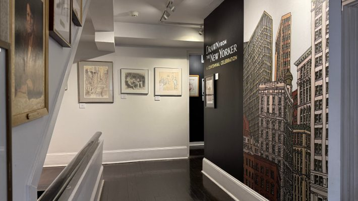
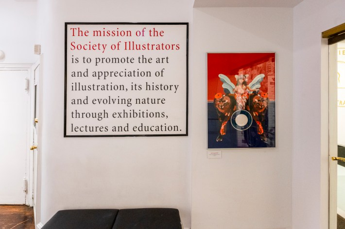

Science and art are two sides of the same coin. From da Vinci’s “Vitruvian Man” to Darwin’s sketches of finches to modern data visualization infographics, illustration has played a vital role in both recording and communicating scientific knowledge. It’s a relationship you can see on display at the Society of Illustrators museum in New York City.
Arabelle Liepold, the executive director of the Society of Illustrators, recently sat down to answer our questions about illustration’s relationship with science, what scientists can learn from artists, and how we can all support illustrators.
How did you decide you wanted to pursue a career in the arts?
I've always been drawn to the arts—not just as a form of personal expression but as a way to connect people and tell meaningful stories. My journey started early, with a deep interest in visual storytelling and creative expression. Studying art, film, and literature further shaped my understanding of how artistic narratives influence culture and bring communities together. Over time, I realized that my passion lay in the intersection of art curation, community, and cultural management. That’s what led me to pursue a career where I could champion artists, organize cultural events, and contribute to the broader creative landscape.

Portrait of Arabelle Liepold by John Jay Cabuay. Image courtesy of Arabelle Liepold.
What drew you to illustration over other forms of artistic expression?
As a kid, you would always find me drawing stories and characters. Storytelling has always been at the heart of what I love, and illustration felt like the perfect medium to bring narratives to life in a visually compelling way.
What I love most about illustration is that it’s literally everywhere. We’re oftentimes surrounded by it without even realizing it—on your cereal package in the morning, the poster in the subway on your way to work, the logo of your go-to coffee brand, the cover of your favorite book or news magazine, the opening title sequence of a TV series, or the label on a wine bottle. In a way, illustration is very accessible, inclusive art.
Illustration also has the unique ability to communicate humor and satire, often serving as a powerful tool to comment on social and political issues. Through editorial cartoons or political covers, illustrations can quickly make a point with wit and visual impact that text alone might not achieve. A perfect example is our current exhibition featuring New Yorker cartoons from the past 100 years, celebrating the magazine’s centennial. This ability to blend lighthearted humor with pointed social critique is something that has always drawn me to illustration, as it allows artists to address important topics in ways that resonate deeply with a wide audience.
Illustration has an incredible ability to connect with people on a personal level, which is what ultimately drew me to it over other forms of artistic expression.

The Society of Illustrators Museum. Photo by Joe Iovino.
Can you talk about the role illustration plays in science?
Illustration has always been fundamental to scientific discovery and communication. Long before photography, images were the primary means of recording and sharing knowledge. From the earliest depictions of the human body in medical texts to scientific illustrations of the planetary system that helped lay the foundation for our understanding of the universe, drawing has been a crucial tool for scientists to visualize and understand complex concepts. In medicine, anatomical drawings were essential for studying the human body and conveying knowledge to students, doctors, and researchers. They allowed for a deeper understanding of anatomy, injury, and disease—much before the advent of modern imaging technology.
Early botanical drawings of plants are another great example. These images served not only as a method of explanation but also as archives that preserved knowledge for future generations. We recently hosted the American Society of Botanical Artists’ Annual International Exhibition at the Society of Illustrators, showcasing firsthand the incredible detail and scientific significance of illustration.
Is there anything in science that inspires you?
One thing that always fascinates me is the way science and illustration intersect—how both are driven by discovery and curiosity. The detailed illustrations of the human body in early medical texts or the intricate drawings of plants and animals in botanical studies are amazing examples of how art has helped expand our understanding of the world. I’m especially inspired by the work that continues to bridge these two fields, like illustrations that depict complex scientific concepts, such as the structure of DNA, or the beauty of space exploration with vivid renderings of distant planets and galaxies.
What excites me the most is the potential for new scientific frontiers to spark even more creativity in illustration. Science is always evolving, and as it does, so too do the ways we represent and understand the world around us—whether it's in biology, astronomy, or environmental science. The challenge of illustrating these ever-evolving concepts keeps me inspired and reminds me how closely art and science are intertwined.

The Society of Illustrators Museum. Photo by David Plakke.
Is there anything you think scientists can learn from artists—or vice versa?
There’s so much that both scientists and artists can learn from each other! For one, artists have an incredible ability to communicate complex ideas in a visually engaging and accessible way. Scientists can learn from this by using visual storytelling—whether through illustrations, diagrams, or graphics—to make their work more comprehensible and relatable to a broader audience. Illustration can also help convey the emotional and human side of science, something that raw data or technical language often misses.
On the other hand, artists can draw from the precision and objectivity of scientific inquiry. Science is rooted in observation, measurement, and evidence, and artists can be inspired by this attention to detail and dedication to exploring the world with a critical, investigative eye. Artists often observe things from a subjective standpoint, but learning to approach their subjects with the same level of analysis and curiosity that scientists do could lead to new, innovative ways of creating art.
In essence, there’s a shared emphasis on exploration, whether in the lab or on the canvas. The collaboration of both fields has the potential to create deeper connections, uncover new insights, and produce work that is both intellectually and visually captivating. It’s all about seeing the world in new ways—and combining the scientific method with artistic creativity can lead to discoveries and expressions that neither could achieve alone.
The rise of generative AI services is causing some controversy in the art world. What are your thoughts on the use of AI to create illustrations?
At the Society of Illustrators, we are dedicated to showcasing art created by humans and do not allow AI-generated art in our competitions or exhibitions. While technology has its place, I believe that human-made art carries an irreplaceable depth of emotion, thought, and experience. AI can replicate patterns and styles, but it cannot capture the soul or the story behind each piece. Our exhibitions celebrate the authentic work of human artists, and we hope society will continue to value human creativity. Artists dedicate years of training, skill, and personal vision to their craft, and it's essential that their contributions are respected. Until there is a reliable system to ensure artists are properly credited and compensated when their work is used or referenced in AI-generated creations, this issue remains a significant challenge. Art should always center on human creativity and effort, and those who contribute to it deserve rightful recognition.
What are some things non-artists can do to support illustrators?
Non-artists can best support illustrators through active engagement and appreciation of their work. One simple yet impactful way is by attending exhibitions and public programs with illustrators. When you come to our Museum of Illustration for an exhibit or an event, you are not only experiencing the incredible talent and creativity of illustrators but also directly contributing to their livelihoods. Your presence and participation validate their hard work and dedication, making them feel valued and respected.
Credit and promotion are also crucial. When sharing art on social media or other platforms, always credit the artist. This recognition helps build their reputation and expand their reach. Actively promoting art made by humans reinforces the importance of individual creativity and the unique perspectives that each artist brings to the world.
Purchasing art is another significant form of support. Whether it's original pieces, prints, books, handcrafted products, or zines, it provides artists with financial stability and encourages them to continue creating.
Last but not least, supporting our work at the Society of Illustrators helps support illustrators and the broader artistic community. As the oldest nonprofit organization in the United States dedicated to the art of illustration, we rely on contributions to fulfill our mission of promoting the art of illustration, appreciating its history, and supporting its evolving nature through exhibitions, lectures, education, and community outreach. Your support enables us to continue providing valuable resources and services for illustrators.
Do you have any upcoming exhibits or events you’re especially excited about?
We’ve just opened the Illustrators 67th Annual Exhibition, which celebrates the best in book and editorial illustration. The work on display is incredibly diverse, showcasing international talent and a variety of styles. Two of the pieces, by Tim O’Brien and John Hendrix, were even featured on the cover of Nautilus, and it's always exciting to see the originals in person! The exhibition will be up until April 12, and during Nautilus week (March 26-29), it’s free to visit.
I’m also particularly looking forward to Peter Kuper’s Insectopolis, which will be on view from May 15 to September 20. This exhibit is a visually immersive journey into the 400-million-year history of insects, bringing to life the fascinating stories of ants, cicadas, bees, butterflies, and more. Peter Kuper is an award-winning cartoonist and his work blends science, history, color, and design, illustrating everything from dung beetles navigating by the stars to prehistoric dragonflies hunting and mosquitoes changing the course of human history. It’s yet another powerful example of how illustration and science intersect!
Interview by Jake Currie.
Lead image by David Plakke courtesy of Arabelle Liepold.